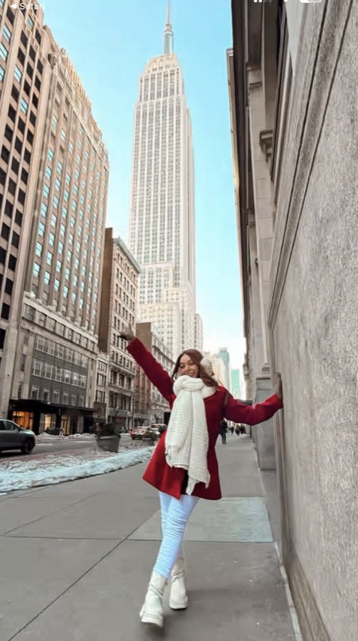
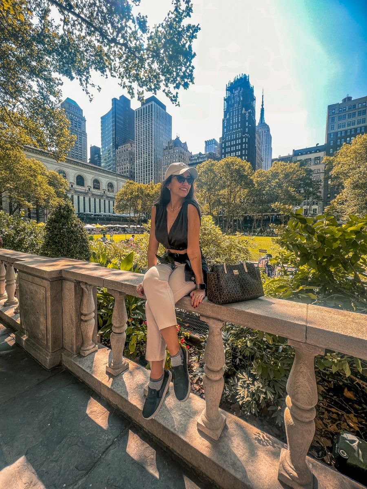
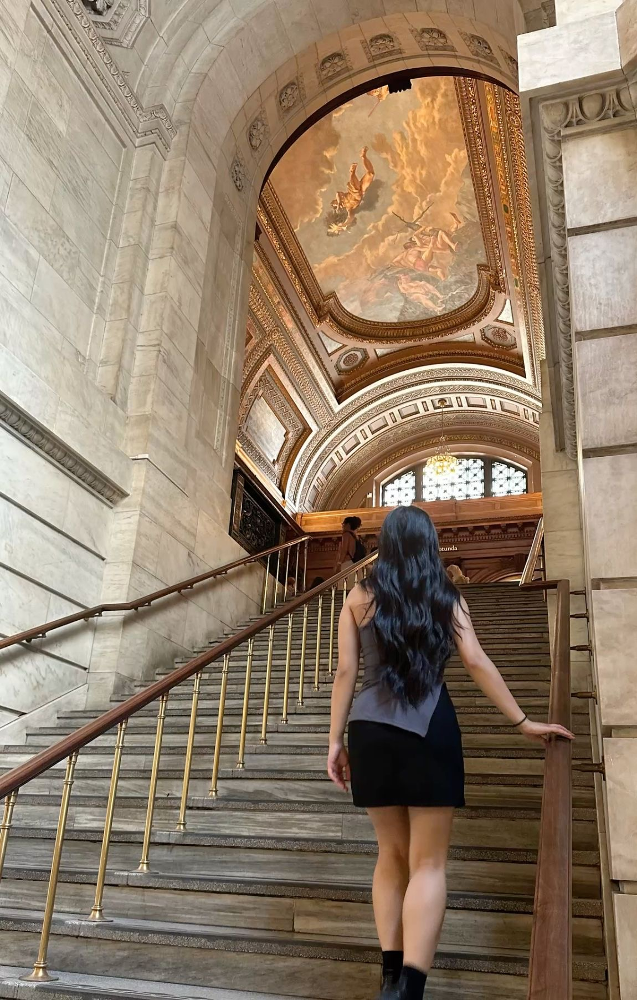
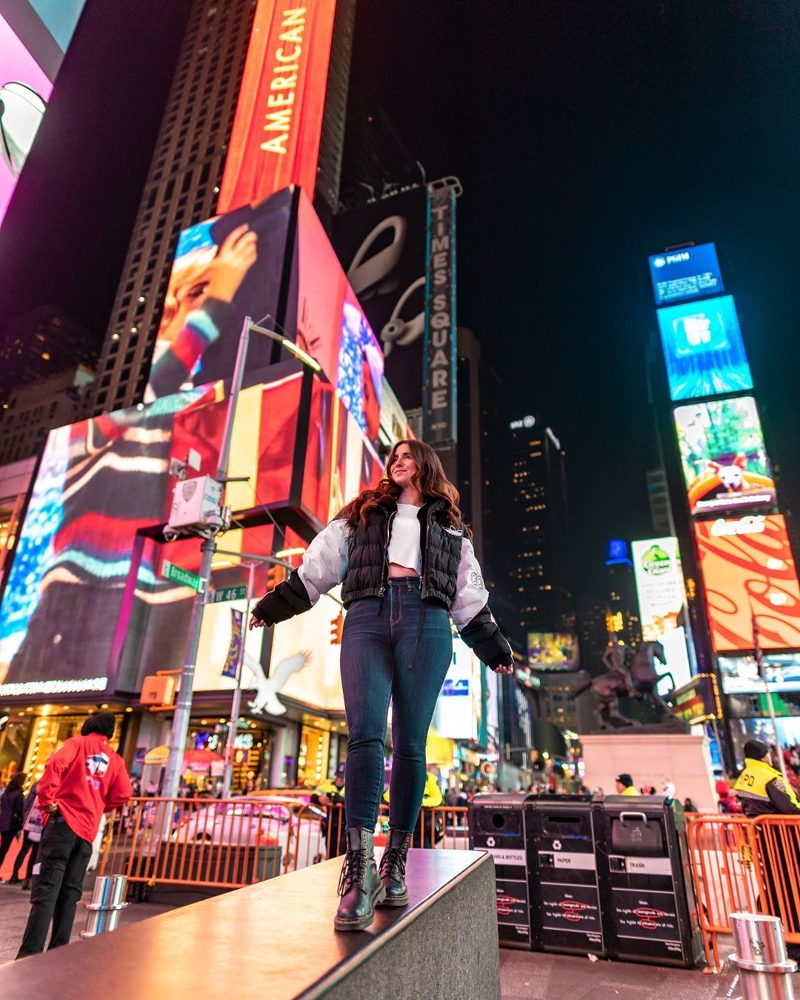
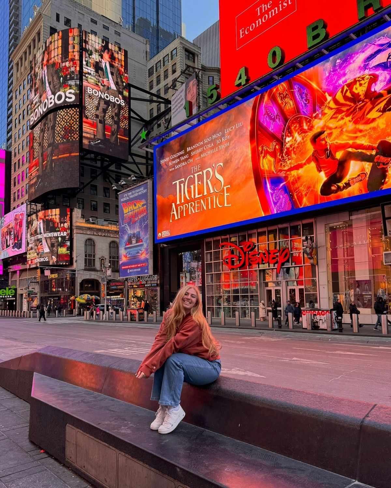
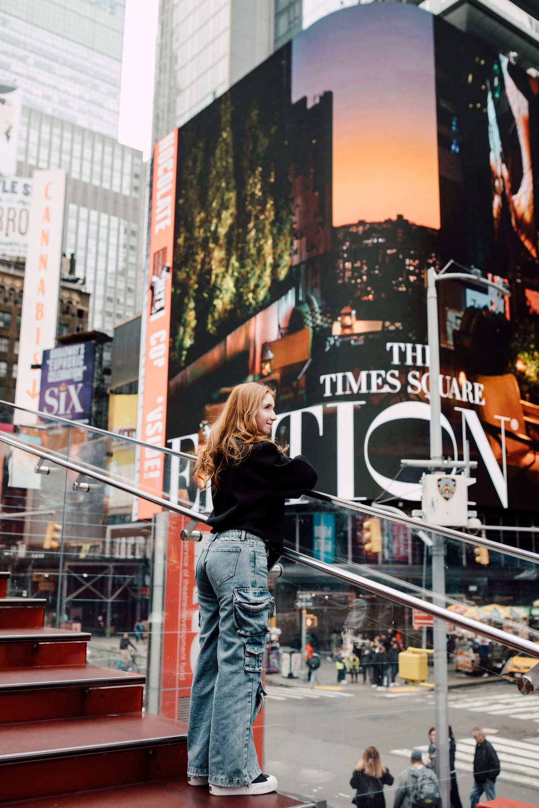

Segunda · 14 de setembroChegada & Midtown
~US$ 74- 1Madison Square Park
- 2Flatiron Building
- 3Loja Harry Potter
- 4Koreatown
- 5Empire State Building
- 6Herald Square · Macy's
- 7Bryant Park & Biblioteca
- 8Rooftop · Stavros Niarchos
- 9Best Buy
- 10Times Square
- 11Rudy's Bar & Grill
Roteiro
-
Pouso em Miami
07h00Chegada do voo internacional GRU → MIA. Imigração americana + retirada de bagagem acontecem aqui.
Conexão de ~4h28 até o próximo voo — dá folga para imigração, esteira e um café antes de embarcar de novo.
-
Embarque Miami → JFK
11h20Trecho doméstico, ~2h50 de voo.
-
Pouso no JFK
14h30Desembarquem e sigam direto para o AirTrain, no Terminal 4.
-
JFK → Manhattan
15h15Do desembarque até o Carlton Arms: AirTrain + duas linhas de metrô. Em cada uma, confiram a direção indicada no letreiro da plataforma — é o nome final da linha, e é o jeito de saber se estão do lado certo.
AirTrain👣 2 min até o metrô, entrando pela Sutphin BoulevardE👣 5 min até a estação 51 St · passagem interna — não precisa subir à rua, é tudo interligado por baixo6👣 7 min até o Carlton Arms Hotel · saída Park Ave South & E 23rd St💰 AirTrain US$ 8,50 + Metrô US$ 3,25 · Total US$ 11,75 por pessoa · ⏱️ ~1h16 no total. 💳 Pagamento por aproximação — cartão ou celular.
-
Check-in no Carlton Arms
17h30Da estação 23rd St (6) são 5 min a pé. Chegando mais cedo, sobra quase 1h de folga antes de sair — banho, descanso, ajuste do fuso.
-
👣 7 min · pela E 25th até Madison Ave
-
Madison Square Park
18h30Storytelling
Antes de virar parque em 1847, esse terreno já foi cemitério para os pobres da cidade e depois um paiol do exército — só ganhou grama e bancos décadas depois. Foi aqui, não na 8ª Avenida, que ficava o primeiro Madison Square Garden, erguido em 1879 bem na esquina do parque. E entre 1876 e 1882 o braço com a tocha da Estátua da Liberdade ficou exposto exatamente aqui, como estratégia pra arrecadar dinheiro pra construir o resto da estátua — dá pra imaginar o choque de ver só um braço gigante de cobre no meio do gramado.
Hoje é um respiro verde cercado de prédios lindos — o Flatiron de um lado, o MetLife Tower do outro. De dia é nitidamente um parque de gente da região: executivos do Flatiron District almoçando na grama, moradores levando cachorro pro dog run (um dos mais concorridos de Manhattan), fila que não acaba no Shake Shack original — que abriu ali em 2004 como um carrinho de cachorro-quente e virou fenômeno mundial. Turista, no geral, passa rápido: para pra foto do Flatiron na ponta sul e segue viagem. Mas se vocês sentarem uns minutos num banco, dá pra sentir o parque como ele realmente é — o point do bairro, não uma atração.
Primeira respirada em Nova York. Vista clássica do Flatiron pela ponta sul do parque.
-
Flatiron Building
18h50Storytelling
O Flatiron nasceu em 1902, projetado por Daniel Burnham, num terreno triangular formado pelo cruzamento da Broadway com a 5ª Avenida — daí o formato de ferro de passar que deu o apelido (o nome oficial é Fuller Building). Com 87 metros e 22 andares, foi um dos primeiros arranha-céus de estrutura de aço da cidade e, na época, uma das construções mais altas do mundo. A ponta é tão fina que virou lenda urbana — apostavam quanto tempo levaria pra ele desabar com o vento.
O formato triangular cria correntes de vento na esquina que, no início do século 20, levantavam as saias das mulheres que passavam ali — e o lugar virou ponto de encontro de homens querendo ver a cena, até a polícia começar a afastá-los gritando "23 skidoo" (o número da rua ali do lado, a 23rd Street), expressão que entrou pro inglês americano como sinônimo de "dar o fora rápido". Hoje o cruzamento continua sendo um dos mais fotografados de Nova York — turista para no meio da calçada, vira pra trás, e tenta pegar o prédio inteiro entrando no enquadramento.
📸 Inspiração pra Carimbar

-
👣 4 min · descendo pela Broadway até a 21st St
-
Loja Harry Potter · Flagship NY
19h00Storytelling
Essa é a única loja flagship de Harry Potter do mundo — não existe outra igual em nenhum outro país. Devia ter aberto em 2020, mas a pandemia empurrou a inauguração pra 3 de junho de 2021, bem ao lado do Flatiron. São mais de 1.950 m² espalhados por três andares, com a maior coleção de produtos de Harry Potter e Animais Fantásticos do planeta — 15 áreas temáticas diferentes dentro da loja. Logo na entrada, um Fawkes, a fênix de Dumbledore, flutua sobre a cabeça de quem entra: uma réplica com mais de 100 kg, feita à mão por uma equipe de prop makers ao longo de meses.
Não é um museu, é loja mesmo — só que pensada pra virar experiência. Tem bar de Butterbeer, área de varinhas interativas onde sensores detectam o movimento de quem experimenta, réplicas de cenas dos filmes pra foto. Quem mora em Nova York conhece de vista mas raramente entra — é destino de turista e de fã roteirizado, não um point de passagem do bairro. Nos fins de semana a fila pode se formar já na calçada; num fim de tarde de semana, como esse, costuma fluir bem mais rápido.
A maior loja da franquia no mundo, 935 Broadway — três andares de mercadoria exclusiva (nada que se acha em outra loja), área de varinhas interativa e café no telhado. Entrada gratuita, é loja, não atração paga.
💰 Sem ingresso pra entrar, mas raro sair sem comprar nada. Fila pode formar nos fins de semana.
-
👣 14 min · subindo pela Broadway até a W 32nd
-
Koreatown · W 32nd St
19h35Storytelling
O Koreatown de Nova York nasceu nos anos 1980, quando imigrantes coreanos começaram a abrir negócios num único quarteirão da W 32nd St, entre a 5ª e a 6ª Avenida — diferente de Los Angeles, onde o bairro coreano se espalha por quilômetros, aqui tudo cabe numa quadra só. A proximidade com o antigo Garment District (distrito de confecções) não é acaso: muitos donos de loja vieram trabalhar nas fábricas de roupa da região antes de abrir o próprio negócio.
É um dos poucos lugares de Manhattan que funciona de verdade 24 horas — salas de karaokê (noraebang), restaurantes de churrasco coreano e spas ficam abertos até de madrugada, herança dos tempos em que atendiam trabalhadores saindo do turno da noite nas fábricas ao redor. De dia é point de K-beauty e sobremesas fofas de K-pop; de noite vira point de jantar tardio pra quem sai da Times Square e não quer dormir sem comer.
Uma quadra inteira de letreiros coreanos empilhados em prédios. Barato, aberto até tarde e visualmente incrível.
🛍️ Dica de loja — Ko'llection Outlet
Loja de produtos coreanos (skincare e cosméticos) na Koreatown. Checklist do que procurar lá:
- Retinol Shot — Celimax
-
🌭No caminho: Jongro Rice Hotdog — corn dog coreano pra experimentar.~US$ 8
-
👣 4 min · até a 34th com a 5ª
-
Empire State Building · por fora
19h55Storytelling
O Empire State foi erguido em apenas 410 dias, entre 1930 e 1931 — auge da Grande Depressão, quando Nova York mais precisava de empregos. Ele venceu a corrida contra o Chrysler Building pelo título de prédio mais alto do mundo, e segurou essa coroa por quase 40 anos, até o World Trade Center em 1970. O mastro no topo foi projetado pra ser um ponto de atracação de dirigíveis — um plano que nunca funcionou de verdade, porque os ventos lá em cima eram fortes demais até pra tentar.
Por anos, com tantos andares vazios na Depressão, os nova-iorquinos apelidaram o prédio de "Empty State Building" (Prédio do Estado Vazio). Foi King Kong escalando ele em 1933 que virou o edifício em ícone mundial da cultura pop. Hoje, à noite, o topo se ilumina com cores diferentes conforme a data — verde no St. Patrick's, vermelho e verde no Natal, arco-íris no Pride — quase um calendário de Nova York em luz. Do chão, o point pra foto é a esquina da 5ª com a 34th, onde dá pra ver o prédio inteiro sem inclinar o pescoço.
📸 Inspiração pra Carimbar


Esquina Madison Square com 34th St -
👣 3 min · até a Herald Square
-
Herald Square · Macy's
20h15Storytelling
A loja da Macy's em Herald Square abriu em 1902 e ainda hoje se anuncia como a "maior loja de departamento do mundo" — mais de 250 mil m² espalhados por um quarteirão inteiro. O nome da praça vem do jornal New York Herald, que teve sede ali até o início do século 20; o relógio-monumento com sinos na praça é uma relíquia do prédio do jornal.
Foi aqui que nasceu o Desfile de Ação de Graças da Macy's, em 1924 — criado por funcionários da loja, muitos deles imigrantes recém-chegados, como forma de celebrar a nova pátria à moda dos desfiles europeus de Natal. Os balões gigantes só entraram em 1927. E foi essa loja, essa vitrine, que virou cenário do clássico "Milagre na Rua 34" (1947), consolidando pra sempre a ligação entre a Macy's e o Papai Noel de verdade.
-
👣 10 min · pela Broadway ou 6ª Av
-
🍩No caminho: Krispy Kreme — pra experimentar um donut fresquinho.~US$ 3
-
Bryant Park & Biblioteca Pública
20h40Storytelling
Antes de ser parque, esse terreno também foi cemitério dos pobres da cidade, como o Madison Square — e depois sediou a Exposição Mundial de 1853, num palácio de vidro e ferro inspirado no Crystal Palace de Londres, que queimou por completo em 1858. Ganhou o nome atual em 1884, em homenagem ao poeta e editor William Cullen Bryant. Os leões de pedra na entrada da biblioteca, ao lado, têm nome — Paciência e Fortitude — batizados pelo prefeito LaGuardia durante a Depressão pra lembrar Nova York das qualidades que precisava ter pra atravessar a crise.
Nos anos 1970 e 80 o parque virou point de tráfico de drogas — tão perigoso que os moradores evitavam passar perto. A virada aconteceu em 1992, quando uma reforma derrubou as cercas altas e os arbustos que escondiam o parque da rua: a lógica era simples, um espaço visível de fora é um espaço mais seguro. Deu tão certo que virou caso de estudo de urbanismo no mundo inteiro. Hoje é puro contraste com aquele passado — cadeiras verdes espalhadas na grama, gente lendo, piano público, e à noite os prédios ao redor acendendo como moldura.
O parque à noite com os prédios em volta acesos. Os leões Patience e Fortitude ficam na entrada da 5ª Av.
🚻 Os banheiros do Bryant Park são os mais bonitos e limpos de Nova York — e gratuitos. Fecham às 22h.
📸 Inspiração pra Carimbar


Escadaria interna da biblioteca -
👣 3 min · até a Stavros Niarchos Foundation Library
-
Stavros Niarchos Foundation Library · Rooftop
20h45Storytelling
O prédio nasceu em 1915 como a loja de departamento Arnold Constable, e só virou biblioteca em 1970, quando a New York Public Library o transformou na Mid-Manhattan Library — por décadas a filial circulante mais visitada da cidade. Entre 2017 e 2020 ela fechou inteira pra uma reforma de US$ 200 milhões, tocada pelo escritório holandês Mecanoo com a Beyer Blinder Belle: a Fundação Stavros Niarchos doou US$ 55 milhões, a segunda maior doação individual da história da NYPL, e a prefeitura completou com US$ 150 milhões. Reabriu em 2021 com o novo nome.
O terraço no topo é o único mirante público e gratuito de Midtown — o tipo de coisa que só quem já morou ou pesquisou sobre Nova York sabe que existe, enquanto turista paga US$ 40, US$ 50 pra subir num observatório do outro lado da rua. De cima, dá pra ver Bryant Park lá embaixo e os prédios de Midtown se acendendo com o entardecer, sem fila, sem ingresso, sem multidão — só uma biblioteca pública fazendo o que biblioteca devia fazer.
Terraço aberto ao público no 7º andar da biblioteca, recém-reformada, com vista pra Bryant Park e o horizonte de Midtown. Gratuito e bem menos concorrido que os mirantes pagos da cidade.
-
👣 5 min · até a Best Buy
-
Best Buy
21h00Loja de eletrônicos — bom pra dar uma olhada em preços de gadgets americanos, powerbanks, fones, e o que mais precisarem pro resto da viagem.
-
🍕No caminho: 2 Bros Pizza — um pedaço pra comer andando.~US$ 10
-
👣 8 min · até a Times Square
-
Times Square
21h20Storytelling
Até 1904 esse cruzamento se chamava Longacre Square. Virou Times Square quando o jornal The New York Times mudou a sede pro prédio triangular na ponta norte da praça — o mesmo prédio de onde, no Ano Novo seguinte, em 1907, desceu pela primeira vez a bola de cristal que até hoje marca a virada do ano, criada porque fogos de artifício tinham sido proibidos na área. A famosa foto do marinheiro beijando a enfermeira no Dia da Vitória, em 1945, foi tirada bem aqui.
Nos anos 1970 e 80 a praça foi sinônimo de decadência — cinemas pornô, crime, prostituição — até uma limpeza pesada nos anos 1990, puxada em parte pela Disney, transformar tudo em vitrine turística iluminada 24 horas. Hoje mais de 300 mil pessoas passam por aqui todo dia, e as telas de LED nunca apagam — por lei, os prédios da praça são obrigados a ter publicidade iluminada, uma das poucas áreas do mundo com essa exigência. É o "Crossroads of the World", cruzamento do mundo, apelido que ganhou ainda no início do século 20 e nunca perdeu.
O fecho de maior impacto. Suba nas arquibancadas vermelhas da TKTS (47th) para a vista de cima.
📸 Melhor take: no meio da ilha de pedestres entre a 44th e a 45th, câmera baixa apontando para cima.
📸 Inspiração pra Carimbar



-
👣 7 min · pela 8ª/9ª Avenida até a 44th St
-
Rudy's Bar & Grill · 9th Ave
21h45Storytelling
Abriu em 1933 com uma das primeiras licenças de bebida alcoólica emitidas na cidade depois do fim da Lei Seca — e o boato do bairro é que, antes disso, já funcionava ali um speakeasy clandestino desde 1919, frequentado por gente como Al Capone. É um dos bares mais antigos e menos arrumados de Hell's Kitchen, do jeito que um dive bar de Nova York deveria ser: chão gasto, banco de vinil remendado, luz baixa.
A marca registrada é simples: cerveja barata (uns US$ 3–4 o copo) e um cachorro-quente grátis a cada bebida pedida, girando o dia inteiro numa churrasqueira giratória atrás do balcão. Na porta, um porco cor-de-rosa de quase 2 metros, o "Baron Von Swine", vestido de garçom com gravata-borboleta, é o porteiro não oficial do bar há mais de 20 anos — já foi roubado duas vezes antes de aparafusarem ele no chão de vez.
Copo de cerveja + cachorro-quente de graça — o combo mais nova-iorquino que existe, sem luxo nenhum e cheio de gente do bairro.
💰 Só dinheiro (cash only). 🐷 Procurem o porco rosa gigante na porta pra saber que chegaram no lugar certo.
-
👣 8 min · voltando pela 8ª Avenida até a 49 St
-
Volta para o Carlton
22h30R👣 6 min até o Carlton Arms Hotel💡 O W (dias de semana) também serve, mesma linha amarela. Evitem o N ou o Q nesse horário — de noite em dia de semana eles rodam expressos em Manhattan e pulam a 23 St.
Onde comer neste trecho
- Joe's Pizza · 1435 Broadway, Times Sq — a fatia clássica de NYUS$ 4–5
- 2 Bros Pizza · 32 St Marks / várias — a fatia mais barata da cidadeUS$ 1,50–2
- Koreatown · corndogs, mandu e bibimbap na W 32ndUS$ 8–15
- Rudy's Bar & Grill · 627 9th Ave — cerveja + cachorro-quente grátisUS$ 3–4 a cerveja
- 7-Eleven · água e snacks para o dia seguinteUS$ 5–8
Estimativa de Gastos edite os valores
| Item | Casal |
|---|---|
| 1Transporte — AirTrain + Metrô (JFK → Manhattan) | US$ 23,50 |
| Krispy Kreme — donut no caminho | ~US$ 3 |
| 2 Bros Pizza — pedaço no caminho | ~US$ 10 |
| 2Metrô — R/W de volta ao hotel (US$ 3/pessoa) | US$ 6 |
| Mercado/Good To Go | US$ 15 |
| Jongro Rice Hotdog — corn dog no caminho | ~US$ 8 |
| Rudy's Bar — 2 cervejas (cachorro-quente é de graça) | ~US$ 8 |
| Total do dia | ~US$ 74 |